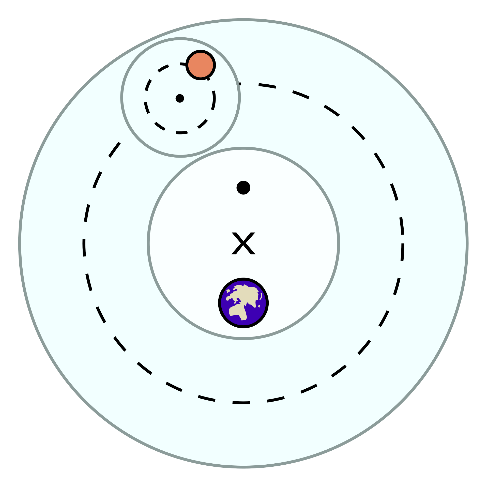

1 Model kao prozor u realnost
Na prvi pogled zakoni fizike deluju kao da su pali sa neba. Barem su meni uvek tako delovali. Formule i njihove posledice deluju kao da su izvedene iz nekih aksioma. Gde aksiomi treba da predstavljaju apsolutnu istinu. Gravitacija je neizbežna posledica Njutnovog zakona gravitacije, i ma koliko mi želeli da skočimo u vis i vinemo se u daljine, to jednostavno nije moguće. Međutim, početna tačka fizike nisu aksiomi (apsolutne istine), već postulati. Već po imenu vidimo da oni ne nose istu težinu kao aksiomi. Postulat vodi svoj koren od latinskog postulare što bi u bukvalnom prevodu značilo upit. Postulati pretpostavljaju postojanje nečega, ne tvrde apsolutno kao aksiomi. Zbog čega postoji ova razlika u disciplinama?
Uz kreativnost i upornost, naučnici (ili prirodni filozofi kao što su se nekad zvali) su uspeli da opišu ponašanje prirode matematičkim formulama. Svi ovi opisi su u stvari posledice opservacija. Kako sve opservacije potiču iz empirije (iskustva), podložne su određenoj distorziji (iskrivljenju) realnosti — konkretno kao posledica merenja.1 Kada je Galileo upotrebio prvi teleskop i ugledao Saturnove prstenove, video je mutnu brljotinu, poput kratkovidog čoveka bez naočara, i pomislio da Saturn ima dva meseca u svojoj orbiti (Figura 1 (a)) (Helden, 1984). Ta iskrivljena slika realnosti je uslovljena mernim aparatima i javlja se ma koliko precizan instrument koristili. Čovekova pozicija u svetu je poput zlatne ribice u akvarijumu, osuđene da gleda izmenjenu sliku sveta (Figura 1 (b)).
1.1 Šta su modeli?
Svaki model je pogrešan, ali neki su korisni. — George Box
Modeli su idealizovane reprezentacije pravog sveta. Korisni su upravo zato što su pojednostavljeni. U farmakologiji, svaka simulacija koncentracija lekova u plazmi uključuje u model velike telesne kompartmane (plazmu, masno tkivo, itd.) kao i činjenicu da sve oralno unete supstance prvo prolaze kroz jetru. Takav model je koristan i bez dodatnog komplikovanja činjenicom da su svi ti procesi pod kontrolom DNK i posledično, velike količine gena. Naravno, onog momenta kada otkrijemo da neka genetska varijanta čini pacijenta osetljivim na lek, postaje korisno uključiti ga u model (Kokko, 2007). Modeli ne ispituju prirodu već naše razmišljanje. Prirodu ispituju eksperimenti. Možemo iskoristiti i opservacije, ako nam je razmišljanje o svetu ispravno, kako bi zaključili nešto o realnosti (N. Grubor, 2023a). Modeli su alatke koje koristimo kao pomoć pri traženju odgovora na naučna pitanja.
1.2 Ptolomej i geocentrični svet
Klaudije Ptolomej je bio Helenistički astronom i učenjak. Njegovo dostignuće je formalizacija geocentričnog modela kretanja planeta tokom 2. veka nove ere. Ptolomejev sistem orbita planeta zahtevao je neke neobične premise, poput kružnih orbita na još kružnih orbita. Takođe, planeta Zemlja nije mogla biti tačno u centru, već malo izmeštena. Uprkos ovim čudnim pretpostavkama, ovaj model je davao precizna predviđanja kretanja planeta za tada dostupne metode posmatranja. Ptolomejev model Solarnog sistema će biti dominantan sledećih 1000 godina (R. Jones, 2023). Ovakav model kretanja planeta je naravno pogrešan. On predviđa ne gde se planete stvarno nalaze u Solarnom sistemu, već gde se one “prividno” nalaze kada ih posmatrač sa Zemlje traži na nebu. Modeli mogu davati jako dobra predviđanja2 ali u korenu biti katastrofalno mehanistično pogrešni (McElreath, 2020, p. 71). Kako model ne predstavlja mehanizam sistema, ne možemo pouzdano intervenisati da ga izmenimo. Ptolomejev model Solarnog sistema je potreban kada se dizajniraju planetarijumi, ali ne i kada planiramo svemirske misije. U eri mašinskog učenja, gde smo u stanju da napravimo modele koji predviđaju jako dobro ali nemaju nikakvu eksplanatornu vrednost, ova stavka je bitnija nego ikad (Hernán, 2018; Scholz & Bürkner, 2022).

2 Primer: Gravitaciono ubrzanje u Beogradu
Lokalno gravitaciono ubrzanje
Stvari koje imaju masu utiču na okolinu preko gravitacionog polja. Što je veća masa to je jača sila privlačenja koja deluje između dva tela. Kako naša planeta nije savršena sfera, privlačna sila neće svuda na Zemlji biti ista. Odradićemo mali eksperiment da pokušamo da je odredimo.3,4
Ideja eksperimenta
Sve što je potrebno je:
- neka stvar koju ćemo puštati da padne više puta
- štoperica
- metar
Našao sam najobičniju tenisku lopticu, mada može bilo šta izdržljivo da posluži. Zatim sam izmerio četiri različite visine u stanu i puštao loptu da pada sa različitih visina dok mi nije dosadilo, mereći vreme do udara o pod štopericom. Više podataka je uvek bolje — napravio sam 51 opservaciju.
Proces koji generiše podatke
Interesantno je da se u ovom procesu padanja tela na pod krije informacija o tome koliko jako deluje gravitacija na našoj planeti. Bilo koji proces koji stvara podatke nazivamo “procesom koji generiše podatke” (engl. data generating process). Informacija o gravitacionom ubrzanju je skrivena u nekom odnosu vremena i visine. Jedini način da smisleno povežemo ove dve vrednosti je ako prvo imamo razumnu teoriju. To nas vraća u osnovnu školu.
2.1 Odakle dolazi formula gravitacije
U osnovnoj školi smo naučili da telo u da se visina tela u slobodnom padu može izraziti sa (detaljnije izvedeno u Dodatak 1):
\[ h = \frac{1}{2}gt^2 \] Kako bismo otkrili kakvo je gravitaciono ubrzanje možemo odraditi eksperiment. Bacanje obične loptice sa poznate visine \(h\) i merenje vremena pada \(t\) nas ostavlja sa jednom nepoznatom: \(g\). Ako pravimo model procesa opšte forme \(y = f(x)\), odnos možemo izraziti formulom:
\[ t_i = \sqrt\frac{2h_k}{g}, \; \text{za i-to bacanje loptice, i k-tu visinu.} \]
Sada možemo prikupiti podatke.
2.2 Otkrivanje gravitacionog ubrzanja
U nadi da će se u mojim podacima pronaći informacija o gravitacionom ubrzanju, napravio sam 51 opservaciju vremena potrebnog za slobodan pad sa 4 različite visine. Rezultujući podaci su dati u Tabela 1. Nelinearan odnos je grafički prikazan na Figura 2
| id | vreme_s | visina_m |
|---|---|---|
| 1 | 0.41 | 0.74 |
| 2 | 0.41 | 0.74 |
| 3 | 0.55 | 0.74 |
| 4 | 0.47 | 0.74 |
| 5 | 0.41 | 0.74 |
Merenja nisu najkvalitetnija. Plato koji se javlja za najviše visine je verovatno artefakt neke vrste (greške u merenju usled uticaja refleksa, otpora vazduha, tehnike ispuštanja loptice, itd.). Nastavićemo primer sa ovim podacima, možda se iznenadimo rezultatom.
2.3 Bajesov model gravitacionog ubrzanja
Neću ovde ulaziti u razlike između fekventističkih i Bajesovskih modela. Sve što nam je potrebno da bi nastavili dalje je da definišemo apriornu raspodelu gravitacionog ubrzanja \(g\) za Beograd. Bajesov pristup ocenjivanja parametara zahteva od nas da jasno kažemo kakve vrednosti su moguće za \(g\).
2.4 Apriorna raspodela gravitacionog ubrzanja
Biranje apriorne raspodele je naučno-istraživačko pitanje i zavisi od ekspertize, tj. poznavanja domena koji se ispituje.5 U ovom slučaju, naše pretpostavke o brzini kojom stvari padaju dolaze iz iskustva — gledali smo mnogo stvari kako padaju. Deluje mi da stvari neće ubrzavati više od 20 m/s (72 km/h) svake sekunde, a znam da verovatno gravitaciono ubrzanje nije blizu 0. Sasvim sigurno je da negativni brojevi nisu mogući. Zbog toga biram normalnu distribuciju centriranu na 10. Apriorna raspodela mogućih vrednosti za \(g\) je prikazana na Figura 3.
2.5 Rezultati
Iskreno, nisam očekivao da ćemo sa samo 51 opservacijom (i to poprilično traljavim) moći ovako precizno da odredimo gravitaciono ubrzanje. Procena parametra \(g\) je data u Tabela 2 pod nazivom g_Intercept. Možemo uporediti naš rezultat (\(\hat g = 9.808 \; m/s^2\)) sa procenom Formule za Internacionalnu Procenu Gravitacije (Theoretical Gravity, 2023) koja nam daje vrednost lokalnog gravitacionog ubrzanja u Beogradu od \(g = 9.806 \; m/s^2\). Iznenađujuće, rezultat uopšte nije mnogo drugačiji od ovog!
Estimate je najbolja procena parametra. Q2.5 i Q97.5 su kvantili.
| Estimate | Est.Error | Q2.5 | Q97.5 | |
|---|---|---|---|---|
| g_Intercept | 9.807979 | 0.74607 | 8.32866 | 11.37652 |
Posteriorna distribucija je prikazana grafički na Figura 4. Parametar je dosta nesiguran (širina aposteriorne distribucije) ali je većina verovatnoće koncentrisana oko najverovatnije vrednosti. Kada je model video podatke dodelio je parametru \(g\) vrednosti koje su konzistentne sa podacima iz našeg eksperimenta.
3 Zaključak
Ovo je u suštini bio pregled naučnog pristupa. Saznali smo šta su modeli i koji su njihovi ciljevi. Definisali smo istraživačko pitanje i šta je proces koji generiše podatke. Zatim smo iskoristili znanje o gravitaciji iz osnovne škole kako bi znali kakav eksperiment treba da konstruišemo. Naš eksperiment je napravio mogućnost da se ispolji proces koji generiše podatke. Zatim smo taj proces ispitali kako bi procenili kakvo je lokalno gravitaciono ubrzanje.
- Naučni modeli su prozor u funkcionisanje sveta
- Predviđanje i razumevanje su dva različita cilja
- Prirodni fenomeni su procesi koji generišu podatke
- Potrebna nam je teorija pre nego što započnemo ispitivanje
- Procesi koji generišu podatke kriju informacije o svetu
4 Dodaci
Dodatak 1: Izvođenje formula gravitacionog ubrzanja
Pređeni put \(s\) je jednak proizvodu srednje brzine \(\bar v\) i vremenu \(t\) tokom kog se telo kretalo tom brzinom.
\[ s = \bar v t \]
Srednja brzina \(\bar v\), tokom ravnomernog kretanja je jednaka \(\frac{\Delta v}{\Delta t}\). Tako da:
\[ s = \frac{v_0 + v}{2}t \]
Ako predstavimo gravitacionu ubrzanje \(g\) kao promenu brzine \(v\) u jedinici vremena \(t\), onda je:
\[ g = \frac{\Delta v}{\Delta t} \] Ako je telo krenulo da pada iz mirovanja onda mozemo da zanemarimo \(v_0\) u obe jednačine. Takođe, ako nas interesuje \(g\) u jediničnom vremenu (tj. trenutku) mozemo da zanemarimo i početno vreme \(t_0\). Tako je onda:
\[ s = \frac{\not v_0 + v}{2}t \rightarrow s = \frac{v}{2}t \] \[ g = \frac{\Delta v}{\Delta t} = \frac{v - \not v_0}{t - \not t_0} \rightarrow g = \frac{v}{t} \rightarrow v = gt \] Kako bi dobili jednačinu slobodnog pada sa visine \(h\):
\[ h = \frac{gt}{2}t = \frac{gt^2}{2} \] Pošto nas zanima nepoznato gravitaciono ubrazanje \(g\), možemo ga izraziti preko vremena kao:
\[ t = \sqrt\frac{2h}{g} \]
Ovaj izraz je odgovarajuć jer će naša zavisna varijabla \(y\) biti jednaka svakoj realizaciji eksperimenta \(t_i\), gde je svaki pad \(i\) lopte imao svoje izmereno vreme \(t\) pada. Nezavisne varijable visina \(h\) i gravitaciono ubrzanje \(g\) su eksplanatorne.
Reference
Fusnota
Možda deluje da kao da tvrdim da su opservacije nekako inferiorni oblik saznanja. Naprotiv, eksperimenti i opservacije su preko potrebni ljudskom saznanju. Čovekov mozak ume veoma lako da se prevari — da umisli veze tamo gde one ne postoje. Eksperimenti nam omogućavaju da proverimo naše teorije. I često, ako se rezultati ne poklapaju, možemo da unapredimo naše ideje.↩︎
U industriji je često predikcija cilj sam po sebi (npr. koji tip osobe će kliknuti na reklamu koja mu je servirana). Međutim, istraživači bi trebalo da teže nekom razumevanju sveta. Kada imamo kauzalni model, onda možemo da planiramo intervencije, tj. šta će se desiti ako utičemo na sistem. Oba cilja su korisna, sve zavisi od konteksta.↩︎
Sumnjam da ćemo imati dovoljno podataka da precizno odredimo lokalnu gravitacionu kanstantu, ali barem možemo da otkrijemo koliko precizni možemo da budemo.↩︎
Inspiracija za ovaj eksperiment dolazi iz veoma kvalitetnog članka o principijelnom modeliranju od Betancourt (2019).↩︎
Apriorna raspodela i njena uloga u medicinskom zaključivanju su detaljnije opisani u N. Grubor (2023b).↩︎
Navođenje
@online{n. grubor2023,
author = {N. Grubor, Nikola},
title = {Priče iza Podataka: Model za Otkrivanje Gravitacije},
date = {2023-12-02},
url = {https://nikola-grubor.github.io/myblog/posts/sr/gravitacija},
langid = {sr-Latn}
}